Operations Command Center
My quotes, lead tracking and B2B outreach lived in three separate spreadsheets, and I checked each one when I remembered to. I built one page that pulls all three together, live.
How it flows
The Sales CRM tracked quotes and bookings. A separate lead tracker logged response and booking rates across our four inbound sources, and a third sheet ran the B2B outreach. I checked each one on its own schedule, so a lead going cold or a company waiting on a follow-up only came up if I happened to open the right tab that day. There was also no single number for how the business was doing this week, just three partial ones.
I didn't want to rebuild any of the three tools, because they each did their job. I wanted a thin extra layer on top: one screen that pulls live figures from all three and answers one question first, which is what needs my attention today.
Ops Hub is a small Apps Script web app that reads straight from the three sheets (Sales CRM, Lead Tracker and B2B Outreach) and works out the totals when you open it, so the data isn't copied anywhere. The Overview page shows quotes, bookings, response rate and outreach status side by side. A Needs Attention panel lists what's overdue or due today, with counts, so there's nothing to go looking for.
The three tools don't define "done" the same way. The CRM has four lead states and the outreach sheet has seven status labels. I didn't want to squash them into one made-up set, so the Overview keeps each tool's own wording (Booked, Awaiting Reply, Due). Due dates are worked out the same way everywhere: a plain-text date compared with today's date at local midnight. An earlier version let Sheets quietly turn some date cells into numbers, which threw off the due and overdue counts.
374 quotes, a 30.2% booking rate, 6,593 leads across four sources and a 30-company outreach list are now all readable on one screen. No single figure is the main win. What matters is that the system tells me when something is due or overdue, so I don't have to spot it myself.
A hub is worth building once you have more than one system to check, but only if it stays thinner than what it summarises. If it starts keeping its own copy of the data, you've just made a fourth system to keep in sync.
Inside Each Module
The Overview is just a summary. Day to day I still work inside each app directly, searching leads, logging notes, sending templated follow-ups and changing settings, so each one has to work well on its own.
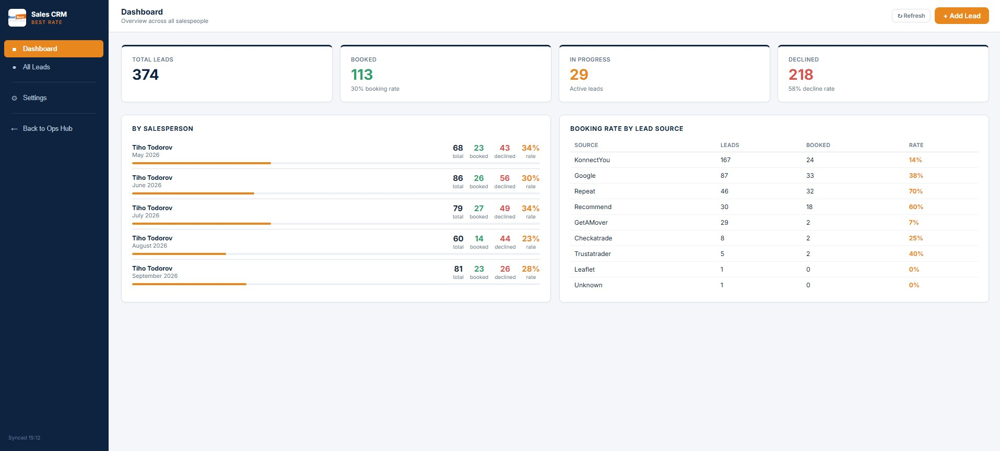
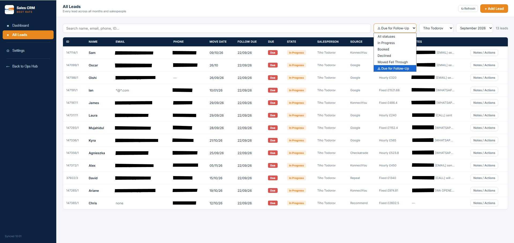
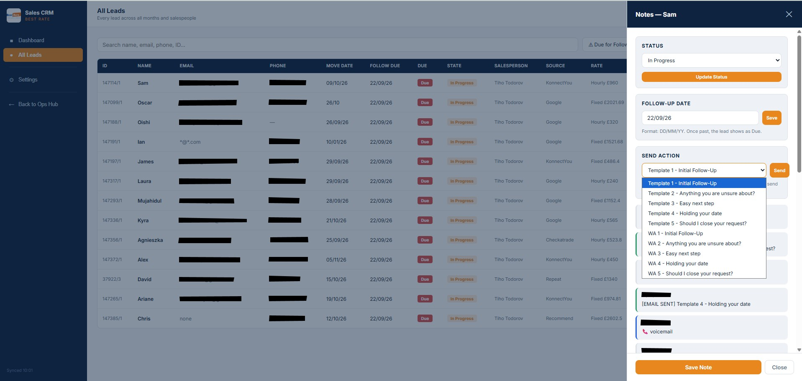
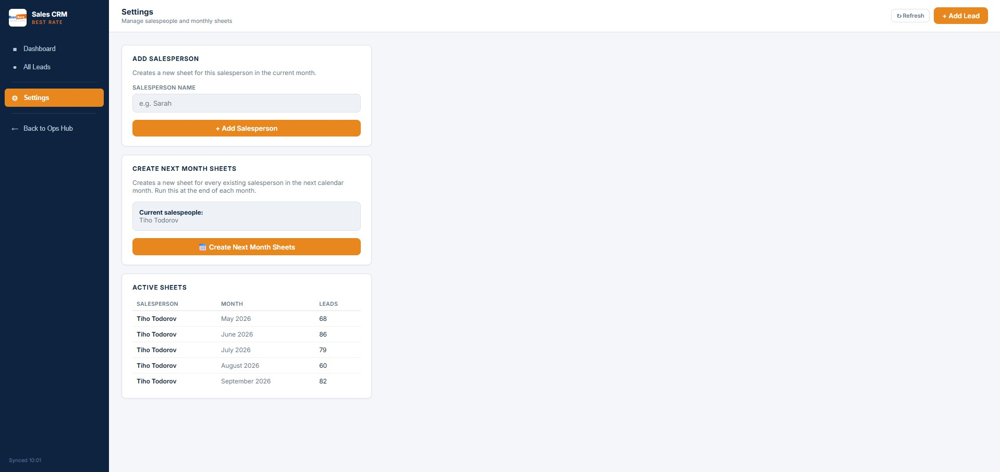
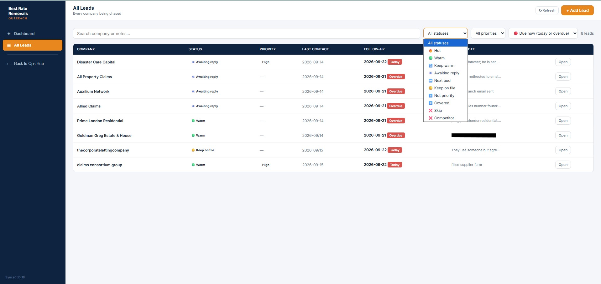
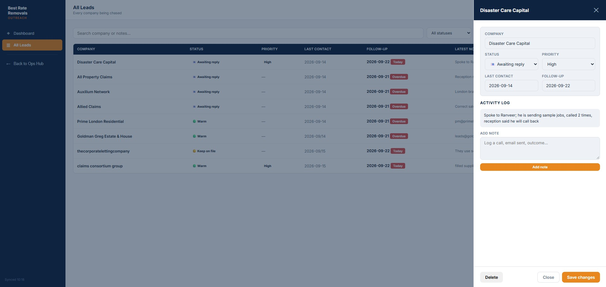
Engineering Decisions
Under the Hood
// Dates are stored as plain text (DD/MM/YY) so Sheets can't // silently convert them to a Date/number and break comparisons. function isDue(followUpText) { var due = parseDateLocal(followUpText); if (!due) return ""; var today = new Date(); today.setHours(0, 0, 0, 0); due.setHours(0, 0, 0, 0); return due <= today ? "Due" : ""; } // Local-midnight parse avoids UTC shifting the day by one function parseDateLocal(str) { var parts = String(str).split("/"); if (parts.length !== 3) return null; var year = parts[2].length === 2 ? "20" + parts[2] : parts[2]; return new Date(+year, parts[1] - 1, +parts[0]); }
In the Field
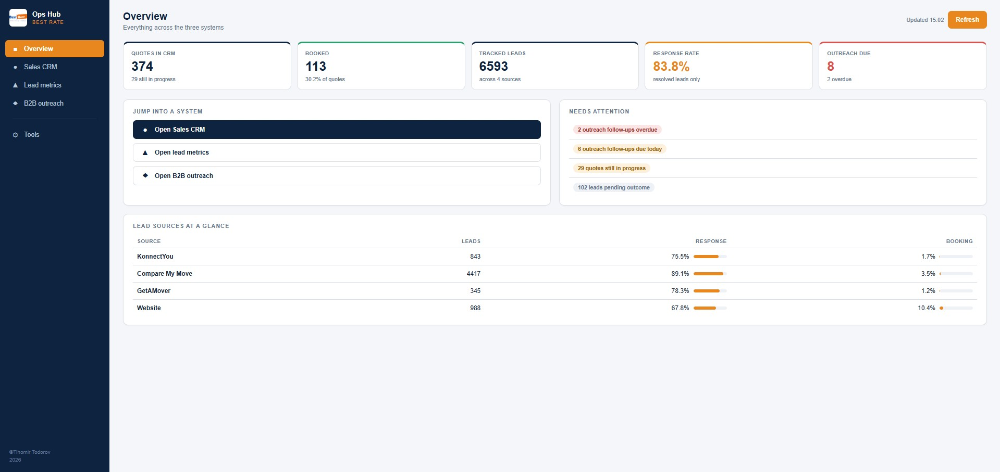
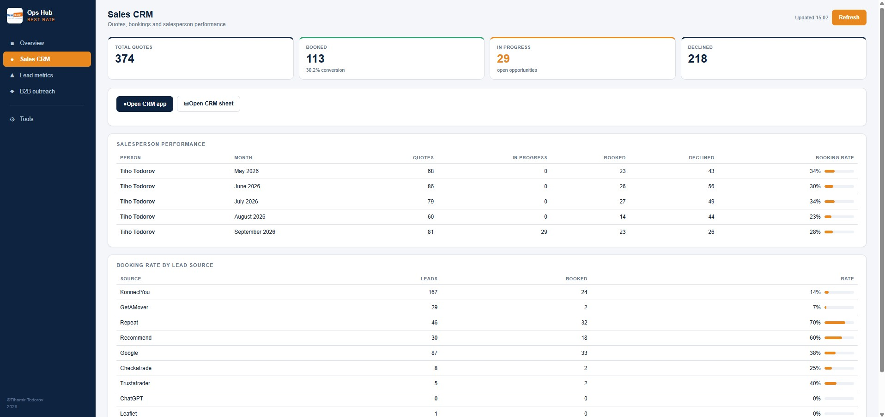
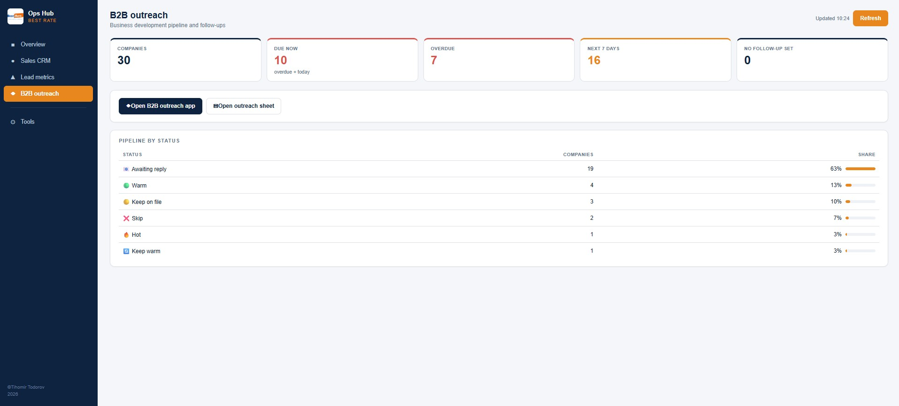
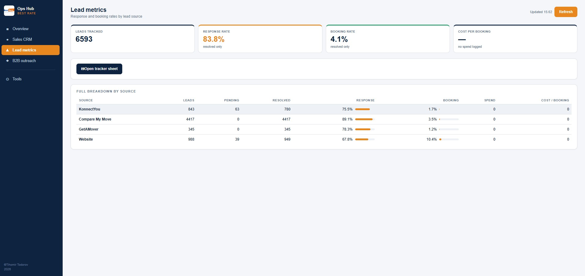
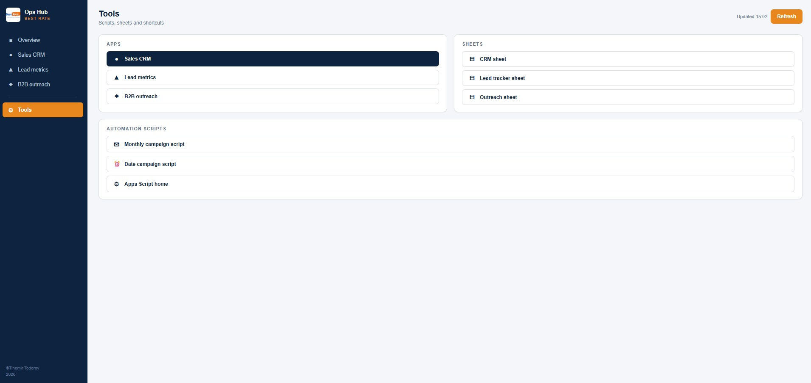